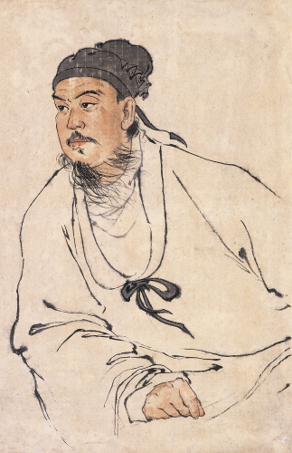
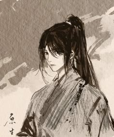

Interpretive Illustration of Sect Master Tang Shi

Recovered Painter's Illustration of Core Disciple Jin Wei

According to the oldest records of the Eternal Star: Atop Mount Zhilong, the Eternal Star Sect lived in harmony within the natural beauty of the mountain. The martial practitioners of the sect meditated under the stars and contemplated their path for as long as they lived, only occasionally taking the journey down the mountain to offer their martial services and wisdom to their domain below. Yet, they sought not to claim the mountain's highest peak for themselves, for they lived with the knowledge that a crane does not need to fly to be close to the stars.

